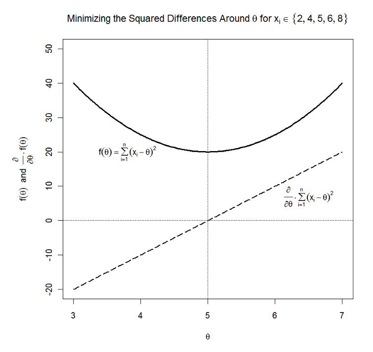
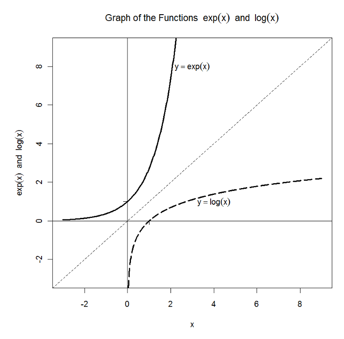
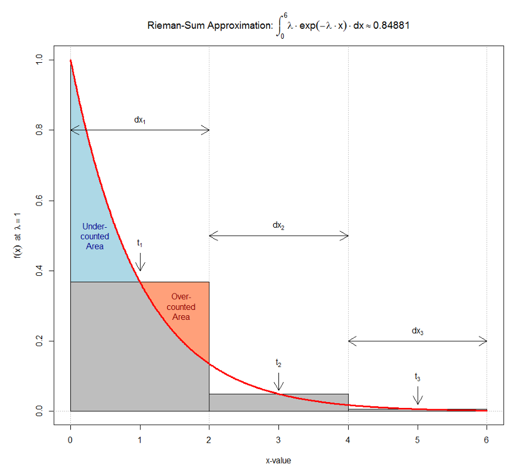
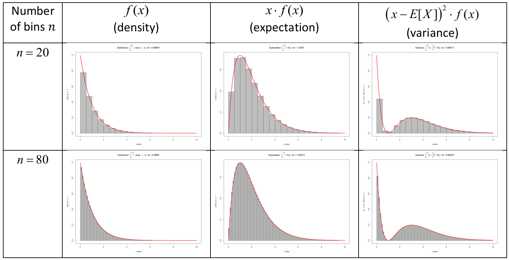
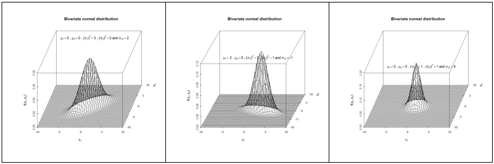
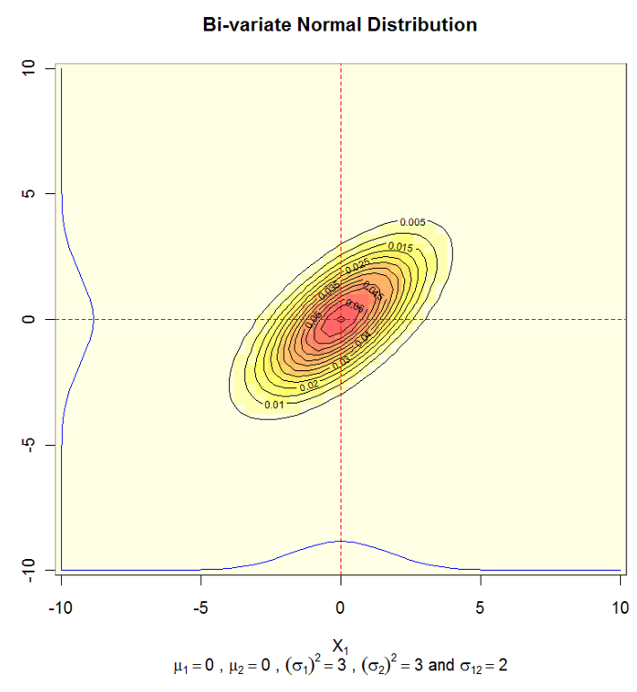

Week00: Basic Math Review - Hamilton’s Applied Theory
1 GREEK LETTERS (SKIPPED)
Greek letters are frequently used to denote either specific population properties, to name specific statistical test or as mathematical operator.
| Greek Letter | Phonetic | Usage |
|---|---|---|
| \(\alpha\) | alpha | error of first type |
| \(\beta\) | beta | error of second type / regression parameters |
| \(\varepsilon\) | epsilon | regression population error term |
| \(\mu\) | mu | expected population mean |
| \(\pi\) | pi | population probability in binomial distribution |
| \(\rho\) | rho | population correlation coefficient |
| \(\sigma\) | sigma | population standard deviation |
| \(\chi\) | chi | \(\chi^2\)-test, \(\chi^2\)-distribution with \(df\) degrees of freedom |
| \(\theta\) | theta | generic parameter of a distribution |
| \(\lambda\) | lambda | parameter of the Poisson and exponential distributions |
| \(\Pi\) | capital pi | multiplication symbol |
| \(\Sigma\) | capital sigma | summation symbol |
2 STANDARD SYMBOLS AND DEFINITION (SKIPPED)
| Operation | Meaning |
|---|---|
| \(\frac{\mathit{Numerator}}{\mathit{Denominator}}\) | ratio between the numerator and the denominator |
| \(\times\) or \(\cdot\), and \(\div\) or \(/,\ +,\ -\) | multiplication and division take precedence over addition and subtraction |
| \(X < Y\) | \(X\) is less than \(Y\) |
| \(X \leq Y\) | \(X\) is less or equal than \(Y\) |
| \(X \pm Y\) | \(X\) plus minus \(Y\), i.e., the two values \(X + Y\) and \(X - Y\) |
| \(\|X\|\) | \(X = \begin{cases} X & \text{for } X \geq 0 \\ -X & \text{for } X < 0 \end{cases}\) |
| \(\frac{1}{X} = X^{-1}\) | Reciprocal of \(X\) |
| \(X^n\) | \(X\) to the power of \(n\) |
| \(\sqrt{X} = X^{\frac{1}{2}}\) | square root of \(X\) |
| \(i \in \{1, 2, \ldots, n\}\) | \(i\) is an element in the set \(\{1, 2, \ldots, n\}\). It takes the values \(1, 2, \ldots\) to \(n\). |
3 NOTATION FOR RANDOM VARIABLES (SKIPPED)
A random variable is denoted by a capital letter \(X\) while a lower-case letter \(x\) is used to denote its observed value.
A random variable can comprise of more than values \(X_i\) relates to a specific observation. The index \(i\) ranges from \(1, 2, \ldots, n\). The number of observations in a variable is \(n\). Therefore, \(X = \begin{pmatrix} X_1 \\ X_2 \\ \vdots \\ X_n \end{pmatrix}\).
For example, if \(X\) has \(n = 4\) observation then it can take 4 random observations, i.e.,
\[x = \begin{pmatrix} x_1 = 3 \\ x_2 = 5 \\ x_3 = 5 \\ x_4 = 4 \end{pmatrix}\]
3.1 RANKED DATA (SKIPPED)
- Statisticians frequently work with an ascending sorted sequence of observations which is denoted by square brackets \(X_{[ranked]} = \begin{pmatrix} X_{[1]} \\ X_{[2]} \\ \vdots \\ X_{[n]} \end{pmatrix}\). For example, \(x_{[ranked]} = \begin{pmatrix} x_{[1]} = 3 \\ x_{[2]} = 4 \\ x_{[3]} = 5 \\ x_{[4]} = 5 \end{pmatrix}\).
Should two observations have the same rank, such as \(x_i = 5\) and \(x_j = 5\), then the ranks \([r]\) and \([r + 1]\) will be assigned arbitrarily. See the example below:
- Ordering vectors in R:
> x <- c(4,5,2,3,4)
> Idx <- order(x)
> xSort <- x[Idx]
>
> cbind(x, Idx, xSort)
x Idx xSort
[1,] 4 3 2
[2,] 5 4 3
[3,] 2 1 4
[4,] 3 5 4
[5,] 4 2 54 BASIC SUMMATION \(\sum\)-RULES: (SKIPPED)
\[\sum_{i=1}^{n} x_i = x_1 + x_2 + \cdots + x_n\]
The lower index \(i = 1\) express the starting value of the summation sequence and the upper index \(n\) the value where the summation index \(i\) stops.
More specifically \[\sum_{i=2}^{5} x_i = x_2 + x_3 + x_4 + x_5\]
For a sum over a constant \(c\) we get \[\sum_{i=1}^{n} c = n \cdot c\]
for a mixture of a constant and a variable \[\sum_{i=1}^{n} c \cdot x_i = c \cdot \sum_{i=1}^{n} x_i\]
for an additive mixture of variables \[\sum_{i=1}^{n} (x_i + y_i) = \sum_{i=1}^{n} x_i + \sum_{i=1}^{n} y_i\]
Inequalities (so do not confuse either side of the expression; they lead to different results):
\[\sum_{i=1}^{n} x_i \cdot y_i \neq \sum_{i=1}^{n} x_i \cdot \sum_{i=1}^{n} y_i\]
\[\left(\sum_{i=1}^{n} x_i\right)^2 \neq \sum_{i=1}^{n} x_i^2\]
Special rule for ranks: \[\sum_{i=1}^{n} i = \frac{n}{2} \cdot (n+1)\]
Doubly index variables \(x_{ij}\) in a cross-tabulation (or matrix) with \(I\) rows and \(J\) columns:
Let:
\[\begin{pmatrix} x_{11} & x_{12} & \cdots & x_{1j} & \cdots & x_{1J} \\ x_{21} & x_{22} & \cdots & x_{2j} & \cdots & x_{2J} \\ \vdots & \vdots & \ddots & \vdots & \ddots & \vdots \\ x_{i1} & x_{i2} & \cdots & x_{ij} & \cdots & x_{iJ} \\ \vdots & \vdots & \ddots & \vdots & \ddots & \vdots \\ x_{I1} & x_{I2} & \cdots & x_{Ij} & \cdots & x_{IJ} \end{pmatrix}\]
Then the \(i\)-th row sum is \(x_{i+} = \sum_{j=1}^{J} x_{ij}\) and the \(j\)-th column sum is \(x_{+j} = \sum_{i=1}^{I} x_{ij}\) and
the total sum becomes \[x_{++} = \sum_{i=1}^{I} x_{i+} = \sum_{j=1}^{J} x_{+j} = \sum_{i=1}^{I} \sum_{j=1}^{J} x_{ij} \text{ or } \sum_{j=1}^{J} \sum_{i=1}^{I} x_{ij}\]
- The R functions:
sum()calculated the sum over the elements of a vectorrowSums()calculates along the rows of a matrix a vector of row sums.colSums()calculates along the columns of a matrix a vector of column sums.
- Example: The variance estimator can either be calculated by \[s^2 = \frac{1}{n-1} \cdot \sum_{i=1}^{n} (x_i - \overline{x})^2\] or by \[s^2 = \frac{1}{n-1} \cdot \sum_{i=1}^{n} x_i^2 - \frac{n}{n-1} \cdot \overline{x}^2\]. To derive this equivalence of both expressions, remember the definition of the mean \(\overline{x} = 1/n \cdot \sum_{i=1}^{n} x_i\):
\[\begin{aligned} s^2 &= \frac{1}{n-1} \cdot \sum_{i=1}^{n} (x_i - \overline{x})^2 = \frac{1}{n-1} \cdot \sum_{i=1}^{n} (x_i^2 - 2 x_i \cdot \overline{x} + \overline{x}^2) \\ &= \frac{1}{n-1} \cdot \left(\sum_{i=1}^{n} x_i^2 - \sum_{i=1}^{n} 2 \cdot x_i \cdot \overline{x} + \sum_{i=1}^{n} \overline{x}^2\right) = \frac{1}{n-1} \cdot \left(\sum_{i=1}^{n} x_i^2 - 2 \cdot \overline{x} \cdot \underbrace{\sum_{i=1}^{n} x_i}_{=n \cdot \overline{x}} + n \cdot \overline{x}^2\right) \\ &= \frac{1}{n-1} \cdot \left(\sum_{i=1}^{n} x_i^2 \underbrace{- 2 \cdot n \cdot \overline{x}^2 + n \cdot \overline{x}^2}_{=-n \cdot \overline{x}^2}\right) = \frac{1}{n-1} \cdot \sum_{i=1}^{n} x_i^2 - \frac{n}{n-1} \cdot \overline{x}^2 \end{aligned}\]
5 FINDING THE MINIMUM OF A QUADRATIC FUNCTION (DISCUSSED)
In statistic, we encounter frequently the need to find an optimal value of a function. If we want to minimize square deviations around an unknown value, the optimal value would be the minimum.
The minimum is found at that point where the slope of the function is zero. The slope of a function is measured by the first derivative.
Basic rules of derivatives:
\[\frac{\partial}{\partial x} f(a) = 0 \quad \text{The function } f(a) \text{ is constant with regards to } x\]
\[\frac{\partial}{\partial x} a \cdot x^n = a \cdot n \cdot x^{n-1}\]
Example: \(\frac{\partial}{\partial x} 3 \cdot x^2 = 6 \cdot x\)
\[\frac{\partial}{\partial x} [f(x) + g(x)] = \frac{\partial}{\partial x} f(x) + \frac{\partial}{\partial x} g(x)\]
Example: \(\frac{\partial}{\partial x} (3 \cdot x^2 + 5 \cdot x^{-1}) = 6 \cdot x - 1 \cdot 5 \cdot x^{-2}\)
- Which value of \(\theta\) (theta) minimizes the quadratic expression \(\min_{\theta} \sum_{i=1}^{n} (x_i - \theta)^2\)?
\[f(\theta) = \sum_{i=1}^{n} (x_i - \theta)^2 = \sum_{i=1}^{n} x_i^2 - 2 \cdot \theta \cdot \sum_{i=1}^{n} x_i + n \cdot \theta^2\]
Take the first derivative with regard to \(\theta\), which is the slope of \(f(\theta)\) at \(\theta\):
\[\frac{\partial}{\partial \theta} \left( \underbrace{\sum_{i=1}^{n} x_i^2}_{\text{dropped, does not depend on } \theta} - 2 \cdot \theta \cdot \sum_{i=1}^{n} x_i + n \cdot \theta^2 \right) = -2 \cdot \sum_{i=1}^{n} x_i + 2 \cdot n \cdot \theta\]
At its maximum or minimum the first derivative (that is, the slope) is zero for a given \(\theta\).
We thus get:
\[-2 \cdot \sum_{i=1}^{n} x_i + 2 \cdot n \cdot \theta = 0 \Leftrightarrow \theta = \frac{\sum_{i=1}^{n} x_i}{n}\]
\(\Rightarrow\) This is the well-know arithmetic mean!!!
- Example: The data values are \(x_i \in \{2, 5, 4, 6, 8\}\). Thus the function to be minimized with respect to \(\theta\) is
\[f(\theta) = (2 - \theta)^2 + (5 - \theta)^2 + (4 - \theta)^2 + (6 - \theta)^2 + (8 - \theta)^2\]
The solution is found at \(\theta = 5 \Leftrightarrow \overline{x}\).

6 THE EXPONENTIAL AND LOGARITHMIC FUNCTIONS (SKIPPED)
- Both functions are inversely related: \(x = \exp(\log(x))\) and \(x = \log(\exp(x))\).
Notes:
The \(\log\)-function is usually the natural logarithm to the basis of the Euler constant \(e = 2.718\)
The support of the logarithmic function is limited from below by zero, that is, \(x \in ]0, \infty]\) with \(\log(0) = -\infty\).
Both functions distort constant distance units of the variable \(x\).
E.g., \(\Delta x_1 = 4 - 2 = 2\) and \(\Delta x_2 = 8 - 6 = 2\)
but \(\log(4) - \log(2) = 1.086\) and \(\log(8) - \log(6) = 0.288\), respectively.
This means, logarithmic distances at the upper end of the scale become compressed.
- Basic rules:
- Logarithmic function: \(\log(x \cdot y) = \log(x) + \log(y)\), \(\log(x/y) = \log(x) - \log(y)\) and \(\log(x^y) = y \cdot \log(x)\)
- Exponential function: \(\exp(x + y) = \exp(x) \cdot \exp(y)\), \(\exp(x - y) = \exp(x) / \exp(y)\) and \([\exp(x)]^y = \exp(x \cdot y)\)

7 APPENDIX 1: POPULATION AND SAMPLING DISTRIBUTIONS (HAM PP 289-293) (SKIPPED)
In theoretical statistics we make statements about the population based on the distribution \(f(y)\) of a continuous random variable \(Y\) or \(\Pr(Y = y)\) for a discrete random variable \(Y\), which takes the specific value \(y\), respectively.
In applied statistics we are dealing with sampled data from the population and aim at estimating properties of the underlying population from which the random sample has been drawn
The sample is a narrow keyhole allowing us to look at parts of the unknown population.
Conventions:
- Parameters characterizing the population are usually denoted by Greek characters, e.g., the expectation \(\mu_X\) of the random variable \(X\). Their estimates are either expressed by Latin characters, e.g., the mean \(\overline{X}\), or by a hat symbol that denotes an estimate, e.g., \(\hat{\mu}_X\).
- A random variable from the population is usually denoted by a capital letter, e.g., \(X\), whereas its observed realization in the sample is denoted by small letters, e.g., \(x_1, x_2, \ldots, x_n\)
Population expectation (i.e., central tendency, center of gravity)
The mean in the population distribution is called expectation and denoted by \(\mu_X = E[X]\)
For discrete variables the expectation function is defined by
\[E[Y] = \sum_{i=1}^{I} y_i \cdot \Pr(Y = y_i)\]
where \(I\) is the total number of representations, which can be an infinite number as for the Poisson distribution \(y_i \in \{0, 1, 2, \ldots, \infty\}\) or a finite set as in the sum of two throws of a dices \(y_i \in \{2, 3, \ldots, 12\}\)
- For continuous random variables the expectation function is defined in terms of the density function \(f(x)\)
\[E[X] = \int_{-\infty}^{\infty} x \cdot f(x) \, dx\]
For infeasible values of \(x\) the density will become \(f(x) = 0\) because these values are improbable.
- Remember: the density function \(f(x)\) at \(x\) cannot be interpreted as probability. We only can express the probability for a range of value:
\[X \in [a, b] \Rightarrow \Pr(a \leq X \leq b) = \int_a^b f(x) \cdot dx\]
- Some rules for the expectation:
\[E[a] = a \quad \text{for a deterministic (constant) value } a\]
\[E[a \cdot X] = a \cdot E[X]\]
\[E[X \pm Y] = E[X] \pm E[Y]\]
\[E[a + b \cdot X] = a + b \cdot E[X]\]
\[E[a \cdot X + b \cdot Y] = E[a \cdot X] + E[b \cdot Y] = a \cdot E[X] + b \cdot E[Y]\]
An unbiased sample estimator of the expectation \(E[Y]\) is the mean \[\overline{Y}_n = \frac{1}{n} \cdot \sum_{i=1}^{n} y_i\]
Variance
- The variance is a measure of squared spread around the center, i.e., expectation, of a random variable
\[\begin{aligned} \text{Var}[X] &= \int_{-\infty}^{\infty} (x - E[X])^2 \cdot f(x) \, dx \\ &= E[(X - E[X])^2] \\ &= E[X^2] - (E[X])^2 \end{aligned}\]
- The unbiased sample variance estimator \(s_X^2\) for the population variance \(\sigma^2\) is:
\[s_X^2 = \frac{1}{n-1} \cdot \sum_{i=1}^{n} (x_i - \overline{X}_n)^2\]
- Basic properties:
\[\text{Var}[a] = 0 \quad \text{because } a \text{ is a constant (i.e., not random)}\]
\[\text{Var}[b \cdot X] = b^2 \cdot \text{Var}[X]\]
\[\text{Var}[X + Y] = \text{Var}[X] + \text{Var}[Y] + 2 \cdot \text{Cov}[X, Y]\]
\[\text{Var}[X - Y] = \text{Var}[X] + \text{Var}[Y] - 2 \cdot \text{Cov}[X, Y]\]
\[\text{Var}[a + b \cdot X] = \text{Var}[a] + \text{Var}[b \cdot X] = b^2 \cdot \text{Var}[X]\]
\[\text{Var}[a \cdot X + b \cdot Y] = a^2 \cdot \text{Var}[X] + b^2 \cdot \text{Var}[Y] + 2 \cdot a \cdot b \cdot \text{Cov}[X, Y]\]
8 EXAMPLE: EXPLANATION OF INTEGRATION USING THE EXPONENTIAL DISTRIBUTION (DISCUSSED)
Integration is key mathematical operation in statistics which is used to find the expectation, variance and higher order moments of continues random variables.
Background information on the exponential distribution
- Example: the waiting times \(x\) between two independent random events (earthquakes, customers lining up in-front of a cashier etc.) may be exponential distributed.
- The exponential distribution only has the one parameter \(\lambda\), with \(E[X] = 1/\lambda\) being the average waiting time.
- You can look at some exponential distributions using
dexp()function. - The exponential distribution is related to the Poisson distribution:
- It provides a stochastic model for the number of independent random events \(y\) within a fixed time-interval.
- The expected number of random events within a fixed time-interval is \(E[Y] = \lambda\).
- If the expected number of events is large, then the average waiting time between the events will be small.
Thus, we have an inverse relationship between both expectations for the exponential and the Poisson distribution.
- The density function of the exponential distribution is
\[f(x|\lambda) = \begin{cases} \lambda \cdot \exp(-\lambda \cdot x) & \text{for } x \geq 0 \\ 0 & \text{otherwise} \end{cases}\]
- Its cumulative distribution function is
\[F(x|\lambda) = \int_0^x \lambda \cdot \exp(-\lambda \cdot x) \cdot dx = \begin{cases} 1 - \exp(-\lambda \cdot x) & \text{for } x \geq 0 \\ 0 & \text{otherwise} \end{cases}\]
- Proof:
- Let \(v = -\lambda \cdot x\). Then \(\frac{dv}{dx} = -\lambda \Rightarrow dx = -\frac{1}{\lambda} \cdot dv\)
- Then
\[F(x|\lambda) = \int_0^x \lambda \cdot \exp(-\lambda \cdot x) \cdot dx = \lambda \cdot \int_0^x \exp(-\lambda \cdot x) \cdot dx\]
and after a change in variable, i.e., integration by substitution, it becomes
\[F(x|\lambda) = \lambda \cdot \int_0^x -\frac{1}{\lambda} \cdot \exp(v) \cdot dv = -\int_0^x \exp(v) \cdot dv = -\exp(v)|_0^x = 1 - \exp(-\lambda \cdot x)\]
Its moments are known analytical:
- The expectation is \[E[X] = \int_0^{\infty} x \cdot \lambda \cdot \exp(-\lambda \cdot x) \cdot dx = \frac{1}{\lambda}\] and
- The variance is \[\text{Var}[X] = \int_0^{\infty} \left(x - \underbrace{1/\lambda}_{=E[X]}\right)^2 \cdot \lambda \cdot \exp(-\lambda \cdot x) \cdot dx = \frac{1}{\lambda^2}\]
The parameter \(\lambda\) can be estimated from sample observations by \(\hat{\lambda} = 1/\overline{x}\).
Evaluation of the moments by numerical integration (see script `RIEMANNSUM.R):
The Riemann sum approximates a continuous integral by \[\int_a^b f(x) \, dx \approx \sum_{i=1}^{n} f(t_i) \cdot dx_i\] by discrete evaluations with \(a = x_0 < x_1 < x_2 < \cdots < x_{n-1} < x_n = b\), with the bin width \(dx_i = x_i - x_{i-1}\) and \(t_i \in [x_{i-1}, x_i]\), which usually is set to the halfway point \(t_i = \frac{x_{i-1} + x_i}{2}\)
The parameters \(dx_i\) and \(n\) determine the resolution and therefore the accuracy of the Riemann sum integral approximation.
Advance integration algorithms make the differences \(dx_i = x_i - x_{i-1}\) adaptive relative to the variability of \(f(x)\):
- If the underlying function \(f(x)\) varies heavily, then the differences \(dx_i\) should be small (much finer).
- On the other hand, if the underlying function is fairly smooth the differences \(dx_i\) could larger.
The underlying idea is similar to an adaptive kernel density estimator.
- Evaluation of the exponential density, expectation, and variance for \(\lambda = 1\) in the range \(x \in [0, 10]\):

- Notes:
The integral \(\int_{-\infty}^{\infty} f(x) \cdot dx = 1\) over any density functions \(f(x)\) always is one.
Theoretically all integrals in the example should be equal to one, because \(\int_{-\infty}^{\infty} f(x) \cdot dx = 1\), \(E(X) = 1/\lambda\) and \(Var(X) = 1/\lambda^2\) for an exponential distribution with \(\lambda = 1\).
Even if we increase the number of bins, these integrals will not approach 1 because we are truncating the infinitive integration range by the upper value \(b = 10 < \infty\).

8.1 COVARIANCE (SKIPPED)
The covariance is a basic measure of the linear relationship between pairs of random variables.
The covariance is the numerator of the correlation coefficient. That is \(\rho = \frac{\text{Cov}[X,Y]}{\sqrt{\text{Var}[X] \cdot \text{Var}[Y]}}\)
The covariance of a variable with itself is called the variance:
\[\text{Cov}[X, X] = \text{Var}[X]\]
\[\begin{aligned} \text{Cov}[X, Y] &= \int_{-\infty}^{\infty} \int_{-\infty}^{\infty} (x - E[X])(y - E[Y]) \cdot f(x, y) \, dx \, dy \\ &= E[(X - E[X])(Y - E[Y])] \\ &= E[XY] - E[X] \cdot E[Y] \end{aligned}\]
An unbiased estimator for the population covariance is
\[s_{XY} = \frac{\sum_{i=1}^{n} \left[ (x_i - \overline{X}) \cdot (y_i - \overline{Y}) \right]}{n-1}\]
- Some rules:
\[\text{Cov}[a, Y] = 0\]
\[\text{Cov}[b \cdot X, Y] = b \cdot \text{Cov}[X, Y]\]
\[\text{Cov}[X + W, Y] = \text{Cov}[X, Y] + \text{Cov}[W, Y]\]
- The covariance is unaffected by the addition of a constant to either random variable:
\[ \mathrm{Cov}[a + X, Y] = \underbrace{\mathrm{Cov}[a, Y]}_{=0} + \mathrm{Cov}[X, Y] = \mathrm{Cov}[X, Y] \]
- The covariance between sums of variables reduces to sums of covariances between their components
\[\begin{aligned} \text{Cov}[X + W, Y + Z] &= \text{Cov}[X + W, Y] + \text{Cov}[X + W, Z] \\ &= \text{Cov}[X, Y] + \text{Cov}[W, Y] + \text{Cov}[X, Z] + \text{Cov}[W, Z] \end{aligned}\]
\[\text{Cov}[X, Y - X] = \text{Cov}[X, Y] - \text{Cov}[X, X] = \text{Cov}[X, Y] - \text{Var}[X]\]
- The Ordinary Least Squares slope estimator in terms of covariances becomes
- The slope regression coefficient for a regression of \(Y\) onto \(X\) becomes
\[\beta_{1,Y|X} = \frac{\text{Cov}[X, Y]}{\text{Var}[X]}\]
- Vice versa, for a regression of \(X\) onto \(Y\) one gets
\[\beta_{1,X|Y} = \frac{\text{Cov}[X, Y]}{\text{Var}[Y]}\]
- The regression intercept for a regression of \(Y\) onto \(X\) becomes
\[\beta_{0,Y|X} = E[Y] - \beta_{1,Y|X} \cdot E[X]\]
because the expectations \(E[Y]\) and \(E[X]\) lie on the regression line.
9 NORMAL DISTRIBUTION AND ITS RELATIVES (DISCUSSED)
Definition: Let \(z\) and the sets \(z_1, z_2, \ldots, z_n\) with \(n\) elements and \(\tilde{z}_1, \tilde{z}_2, \ldots, \tilde{z}_m\) with \(m\) elements be standard normal distributed random variables \(x \sim \mathcal{N}(0,1)\), which are all mutually independent.
The \(\chi^2\)-distribution: The random variables
\[s_n^2 = \sum_{i=1}^{n} z_i^2 \quad \text{and} \quad \tilde{s}_m^2 = \sum_{i=1}^{m} \tilde{z}_i^2\]
of the sums of squared independent standard normal distributed variables are \(\chi^2\)-distributed
\[s_n^2 \sim \chi_{df=n}^2 \quad \text{and} \quad \tilde{s}_m^2 \sim \chi_{df=m}^2\]
with \(n\) and \(m\) degrees of freedom, respectively.
The expected value of a \(\chi^2\)-distributed variable is equal to its degrees of freedom.
The \(t\)-distribution: Let \(t_n = \frac{z}{\sqrt{s_n^2/n}}\) and \(\tilde{t}_m = \frac{z}{\sqrt{\tilde{s}_m^2/m}}\) with \(z\) being independent standard normal distributed. Then \(t_n\) and \(\tilde{t}_m\) are \(t\)-distributed with \(n\) and \(m\) degrees of freedom, respectively.
The \(F\)-distribution: Let \(F_n^m = \frac{s_n^2/n}{\tilde{s}_m^2/m}\). Then \(F_n^m\) is \(F\)-distributed with \(n\) and \(m\) degrees of freedom.
See R-script
SimulateFtCh.r.
10 BIVARIATE NORMAL DISTRIBUTION (SKIPPED)
The bivariate normal distribution between two continuous random variables \(X_1 \in [-\infty, \infty]\) and \(X_2 \in [-\infty, \infty]\) is characterized by five parameters:
\(\mu_{X_1}\) and \(\mu_{X_2}\) for the central tendency on each axis \(X_1\) and \(X_2\).
\(\sigma_{X_1}\) and \(\sigma_{X_2}\) for the spread along each axis \(X_1\) and \(X_2\).
\(\sigma_{X_1,X_2}\) for the covariance between both \(X_1\) and \(X_2\).
3-D examples of a bivariate normal distribution are:
The conditional density is given by \(f(x_1|x_2) = \frac{f(x_1, x_2)}{f(x_2)}\) is shown by the \(x_1\) and \(x_2\) gridlines.

- The conditional distribution is again normal distributed with the expectation
\[\mu_{X_1|X_2=x_2} = \mu_{X_1} + \frac{\sigma_{X_1,X_2}}{\sigma_{X_2}^2} \cdot (x_2 - \mu_{X_2})\]
and the variance
\[\sigma_{X_1|X_2=x_2}^2 = (1 - \rho_{X_1,X_2}^2) \cdot \sigma_{X_1}^2\]
Contour plot example with equal density isolines and marginal densities (see
BivariateNormalDistrib.r):The marginal distributions are again normal distributed with the parameters \(\mu_{X_1}\) and \(\sigma_{X_1}^2\):
e.g. \(\mathcal{N}(\mu_{X_1}, \sigma_{X_1}^2) = f(X_1 = x_1) = \int_{-\infty}^{\infty} f(x_1, x_2) \, dx_2\).
These marginal distributions are schematically shown by the blue curves at the margins
- The total probability under the density is
\[\int_{-\infty}^{\infty} \underbrace{\left( \int_{-\infty}^{\infty} f(x_1, x_2) \cdot dx_2 \right)}_{=f(x_1)} \cdot dx_1 = 1\]

11 BIAS AND MEAN SQUARE ERROR (SKIPPED)
The theoretical sampling distribution of a statistic \(\hat{\theta}\) is evaluated over all possible random samples of a given size \(n\).
A statistic is unbiased if \(E[\hat{\theta}] = \theta\), that is, \(E[\hat{\theta}] - \theta = 0\). It is biased if \(E[\hat{\theta}] \neq \theta\), that is, the estimator’s \(\hat{\theta}\) expected value differs from the true population parameter \(\theta\).
The variance \(\text{Var}[\hat{\theta}] = E[(\hat{\theta} - E[\hat{\theta}])^2]\) expresses the precision of a sample statistics. The square root of this variance is called standard error of a sample statistics.
The* mean square error is defined by
\[\begin{aligned} MSE &= E[(\hat{\theta} - \theta)^2] \\ &= E[(\hat{\theta} - E[\hat{\theta}] + E[\hat{\theta}] - \theta)^2] \\ &= E[(\hat{\theta} - E[\hat{\theta}])^2 + 2 \cdot (\hat{\theta} - E[\hat{\theta}]) \cdot (E[\hat{\theta}] - \theta) + (E[\hat{\theta}] - \theta)^2] \\ &= \text{Var}[\hat{\theta}] + bias^2 \end{aligned}\]
with the term \(E[2 \cdot (\hat{\theta} - E[\hat{\theta}]) \cdot (E[\hat{\theta}] - \theta)] = 0\) is equal to zero because
\[\begin{aligned} E[(\hat{\theta} - E[\hat{\theta}]) \cdot (E[\hat{\theta}] - \theta)] &= E[\hat{\theta} \cdot E[\hat{\theta}] - \hat{\theta} \cdot \theta - E[\hat{\theta}] \cdot E[\hat{\theta}] + E[\hat{\theta}] \cdot \theta] \\ &= E[\hat{\theta}] \cdot E[\hat{\theta}] - E[\hat{\theta}] \cdot \theta - E[\hat{\theta}] \cdot E[\hat{\theta}] + E[\hat{\theta}] \cdot \theta \\ &= 0 \end{aligned}\]
Only \(\hat{\theta}\) is a random variable, whereas \(E[\hat{\theta}]\) and \(\theta\) are constants.
Therefore, \(E[E[\hat{\theta}]] = E[\hat{\theta}]\) and \(E[\theta] = \theta\).